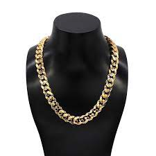

Cadena Cubana (Hombre)
Se trata de una cadena con eslabones ovalados, gruesos y resistentes, que actualmente se comercializa también como pulsera. Es una prenda unisex, cuya popularización estuvo protagonizada, en el ámbito extra-cultural, por los cubanos residentes en Miami, entre los años 1970 y 2000.
